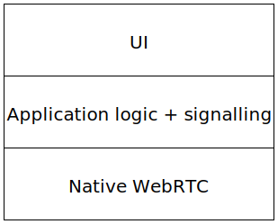
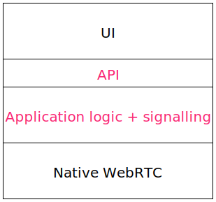

class: center, middle # Cross-platform C++ development with WebRTC --- ## Simple WebRTC app stack <!-- .center[] --> .center[] --- ## Simple WebRTC app stack <!-- .center[] --> .center[] --- ## A bit of history Slack Calls in the Mac native app. * MacGap, basically a WebKit wrapper, used as a single-site browser to run the Slack webapp. * But! No access to WebRTC. --- ## A bit of history JavaScript implementation for Chrome and C++ library were developed together. [*Diagram of application logic handled partly in UI layer. Didn't have a clear separation of concerns.*] API was pretty low-level. A few methods, passing JSON messages directly from our media server. This worked fine for desktop. Our team was handling much of the development. --- ## A bit of history Trouble appeared as we expanded to mobile. * Platform developers had to reimplement domain-specific application logic. * A lot of parsing raw JSON messages from the media server. --- ## Reimagine the approach What is the ideal cross-platform design? **Write-once, run-anywhere** * Consolidates features (and bugs) in one place. * Insulates platform developers from details they shouldn't care about. **Provide a natural API** * Choose the right level of abstraction. * Platform-specific language bindings to make it natural to use. --- ## Our approach Application logic in modern C++... * The native WebRTC libs are C++. * `>= C++11` is a fairly painless experience (occasionally delightful!). ...with an API written in [Dropbox's Djinni](https://github.com/dropbox/djinni). * Uses a simple interface definition language. * Generates cross-platform bindings for `Java` and `Obj-C` <-> `C++`. --- Djinni IDL ```python session = interface +c { static create(observer : session_observer, room_api_json : string) : session; # Start up media streams and join the room. join_room(); } ``` Java ```java public abstract class Session { @Nullable public static native Session create(@Nullable SessionObserver observer, @NonNull String roomApiJson); /** Start up media streams and join the room. */ public abstract void joinRoom(); } ``` Objective-C ```objc @interface LCSession : NSObject + (nullable LCSession *)observer:(nullable id<LCSessionObserver>)observer roomApiJson:(nonnull NSString *)roomApiJson; /** Start up media streams and join the room. */ - (void)joinRoom; ``` --- Djinni IDL ```python session_observer = interface +o +j { # Called when the client has finished joining the room, in response to # join_room() or following on_room_rejoining(). # UI: show the self avatar and peer avatars, all with spinners. on_room_joined(response : room_joined_response, peers : list<peer>); } ``` C++ ```cpp class SessionObserver { public: virtual ~SessionObserver() {} /** * Called when the client has finished joining the room, in response to * join_room() or following on_room_rejoining(). * UI: show the self avatar and peer avatars, all with spinners. */ virtual void on_room_joined(RoomJoinedResponse response, const std::vector<Peer> & peers) = 0; }; ``` --- ## Lessons learned Level of abstraction for the API? **Base it around UI actions and updates.** ```python # Events related to remote "peer" clients. peer_event = enum { # A peer has joined the room. # UI: show the peer's avatar with a spinner. joined; # A peer has left the room entirely. # UI: remove the peer's avatar. left; # A peer has muted their outgoing audio stream. # UI: show a muted icon on the peer's avatar. audio_muted; # The media stream from a peer is suffering from poor network conditions. # UI: show a warning about the peer's network, possibly as an icon on the # peer's avatar. bad_network; } ``` --- ## Lessons learned Threading model Assume the UI thread is hitting the library. Make all heavy methods async. ```cpp void SessionImpl::leave_room() { msg_thread_->post([this] { SyncLeaveRoom(); log_sender_.reset(); shutdown_complete_ = true; observer_->on_room_left(); }); } void SessionImpl::SyncLeaveRoom() { RTC_DCHECK(msg_thread_->is_current_thread()); msg_thread_->disable(); connection_monitor_->Clear(); ... } ``` JVM gets upset when accessed by non-Java created threads. Use a thread launcher. --- ## Resources [mx3](https://github.com/libmx3/mx3): Example project showing Djinni best practices. [Mobile CPP Slack team](https://mobilecpp.slack.com): A good place for questions. --- ## Alternatives we considered RPC frameworks * [Thrift](https://thrift.apache.org/) * [GRPC](http://www.grpc.io/) Offers cross-platform API generation (even JavaScript!) Isn't a great fit for the domain: not designed for running in process (maybe GRPC?). --- ## Conceptually similar efforts [Google Web Toolkit (GWT)](http://www.gwtproject.org/) + [j2objc](http://j2objc.org/) * Write once in Java and transpile to JavaScript and Obj-C. --- ## Two reasonable architectures Do you have Java/Obj-C mobile apps already? ### C++/Djinni Do you have a WebRTC web app, and are building mobile apps? ### JavaScript + React Native --- ## Case study [Reconnection logic, placeholder] --- ## But, you still have to write it twice! We have a plan (sort of): [Emscripten](https://kripken.github.io/emscripten-site/) --- class: center, middle # Thanks! <!-- .left-column[ ### WebRTC stack ] .right-column[.center[]] -->